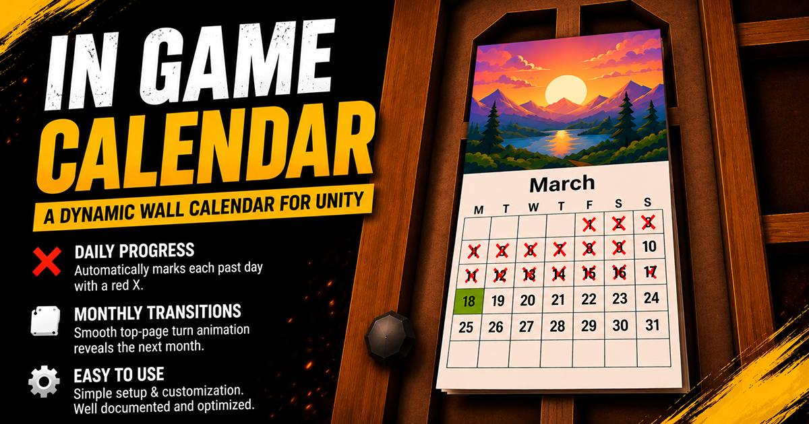
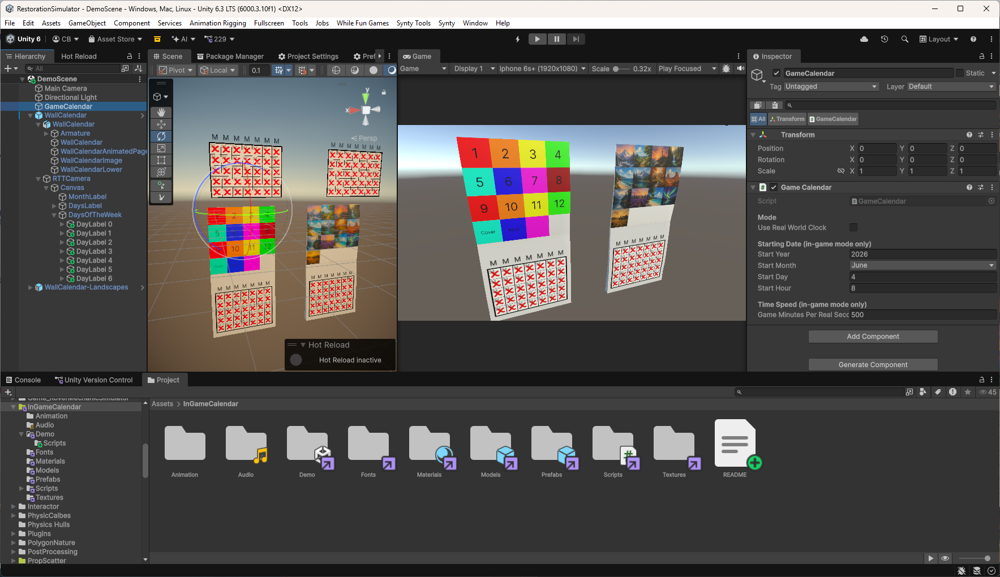
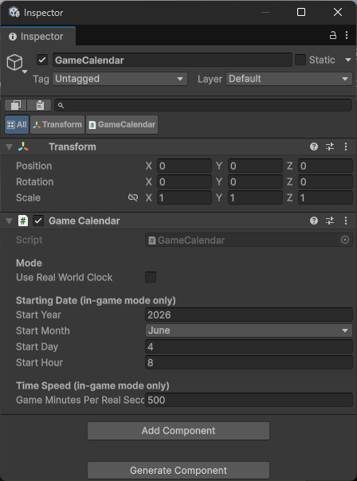
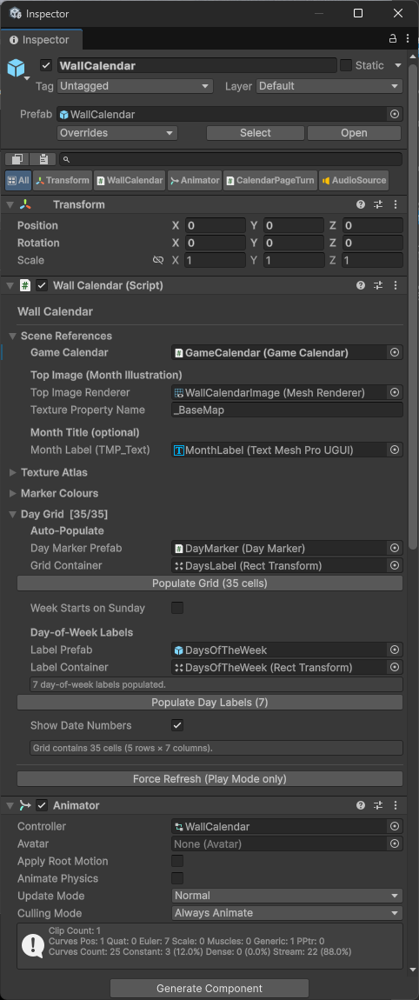
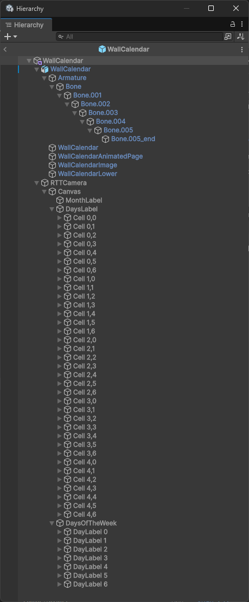
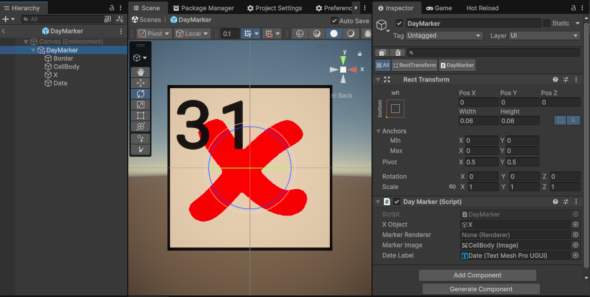
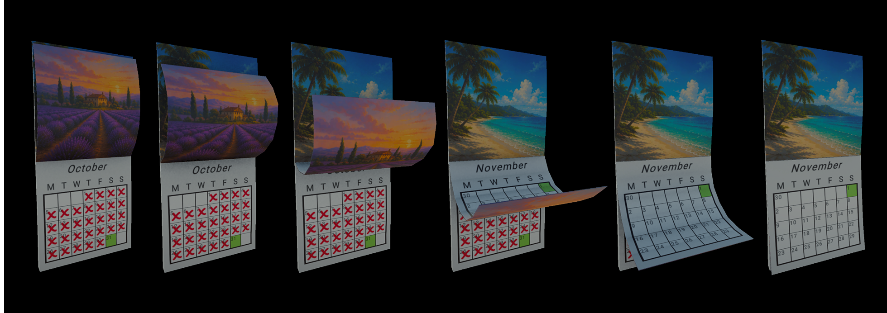
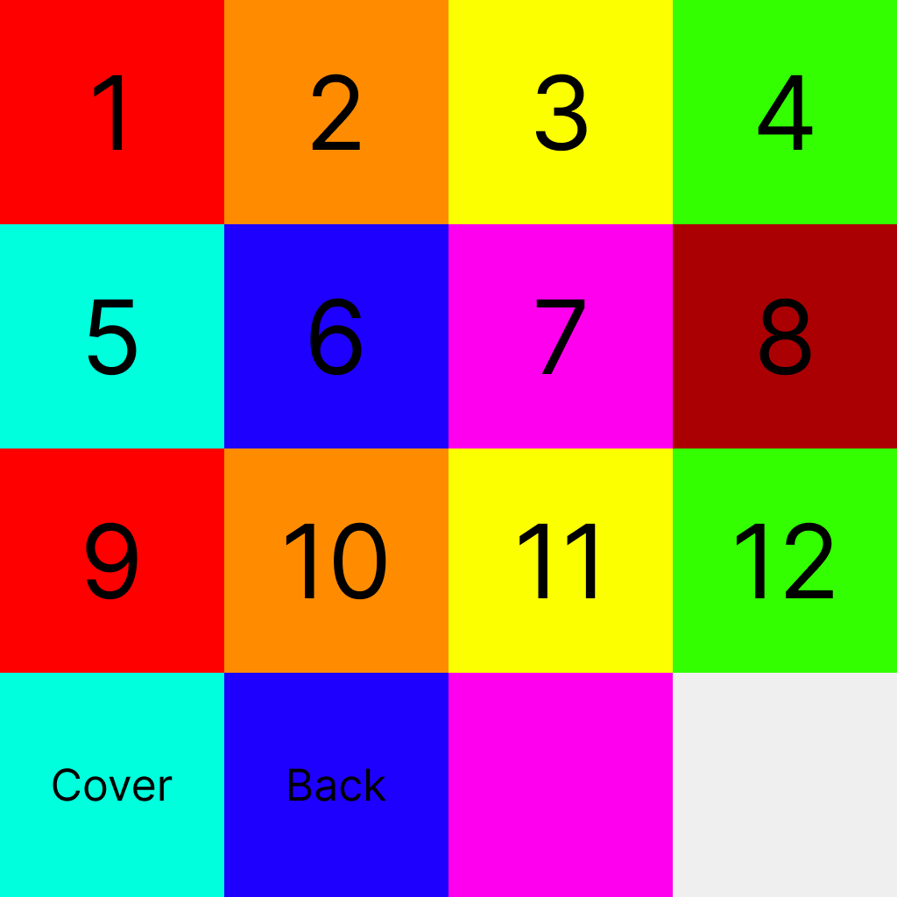

In GameCalendar
{kind=link}

The WallCalendar prop in the included demo scene — month illustration on top, day grid with red X marks crossing off past days, and the SunController driving directional lighting.
Overview
In-Game Calendar gives your game world a living, functional sense of time. A single GameCalendar scene singleton drives everything — either mirroring the player's real system clock or advancing at a configurable in-game speed. The WallCalendar prop reads from it every day tick and updates a 3D wall calendar mesh: the correct month illustration is shown, days that have passed are crossed off in red, and today's cell is highlighted.
When the month rolls over, the CalendarPageTurn component plays a skinned mesh page-turn animation, snapping a texture of the completed calendar before the new month loads in. A SunController demo component drives a directional light as a sun with seasonal arc variation.
Requirements
| Requirement | Detail |
|---|---|
| Unity Version | 2022.3 LTS or higher |
| TextMeshPro | Required — install via Package Manager if not present |
| Render Pipeline | URP, HDRP, and Built-in all supported |
| Scripting Backend | Mono and IL2CPP both supported |
| Platforms | All Unity-supported platforms |
Package Contents
Quick Start
{kind=link}

The included demo scene open in Unity, showing the WallCalendar prop, GameCalendar singleton, and SunController all wired up and ready to run.
Option A — Use the Demo Scene
Open InGameCalendar/Demo/DemoScene and press Play. Everything is already connected.
Option B — Add to your own scene
GameCalendar component via Add Component → In Game Calendar → Game Calendar. Configure the starting date and time speed in the Inspector.
InGameCalendar/Prefabs/WallCalendar.prefab (or WallCalendar-Landscapes.prefab) into your scene. Position and rotate it on your wall surface.
CalendarPageTurn component to the same GameObject (or any object in the scene). Assign the animated page Renderer and RenderTexture references. See the CalendarPageTurn section for full setup.
GameCalendar Singleton
Scene singleton that tracks in-game date and time. Add once to a persistent GameObject. All other components find it automatically via GameCalendar.Instance.
Namespace: ChrisBurns.InGameCalendar
{kind=link}

The GameCalendar Inspector — toggle between Real-World Clock and In-Game mode, set the starting date, and control how fast in-game time advances.
Inspector Properties
1 = real time (1 day = 24 real hours)60 = 1 game hour per real second (~24s per day)1440 = 1 full game day per real second
Public API
| Member | Type | Description |
|---|---|---|
Instance | static property | Scene singleton reference |
Year | int (read-only) | Current in-game year |
Month | int 1–12 (read-only) | Current in-game month |
Day | int 1–31 (read-only) | Current in-game day |
Hour | float 0–24 (read-only) | Current in-game hour (fractional) |
DayOfWeek | System.DayOfWeek (read-only) | Current day of the week |
JumpToDate(month, day, hour) | method | Instantly jump to a date. In-game mode only. |
SetCurrentHour(float) | method | Set time of day without changing the date. |
SetTime(string) | method | Set time from a "HH:MM" string. |
// Example: jump to July 4th at 9am
GameCalendar.Instance.JumpToDate(CalendarMonth.July, 4, 9f);
// Example: set time of day
GameCalendar.Instance.SetTime("14:30");
// Example: read current date
int day = GameCalendar.Instance.Day;
int month = GameCalendar.Instance.Month;Events
void Start()
{
GameCalendar.Instance.OnDayChanged += HandleNewDay;
GameCalendar.Instance.OnMonthChanged += HandleNewMonth;
}
void HandleNewDay() { /* spawn daily events, refresh quest states, etc. */ }
void HandleNewMonth() { /* change season, update shop inventory, etc. */ }WallCalendar Prop Controller
Reads from GameCalendar on the OnDayChanged event and updates all prop visuals: the month illustration texture, month name label, day-of-week column headers, and the 6×5 grid of DayMarker cells.
{kind=link}

The WallCalendar Inspector — assign the GameCalendar reference, top image Renderer, month label, grid container, and configure colour settings for past, present, and future day cells.
Inspector Properties
FindFirstObjectByType on Awake._BaseMap for URP/HDRP or _MainTex for Built-in.DayMarker.prefab from the Prefabs folder. Cells are auto-instantiated via Populate Grid.GridLayoutGroup for automatic cell positioning.dateLabel TMP_Text shows the day number.Scene Setup (from scratch)
{kind=link}

The WallCalendar GameObject hierarchy — the GridContainer holds the GridLayoutGroup that positions 35 DayMarker cells, with a separate row above for the day-of-week column headers.
The included prefab is already fully configured. If you need to set up a WallCalendar manually:
WallCalendar.fbx model in your scene and assign materials from the Materials folder.topImageRenderer to the top-panel mesh Renderer. Assign a TMP_Text to monthLabelTMP.GridLayoutGroup. Assign this panel as gridContainer.DayMarker.prefab into the dayMarkerPrefab slot. Click Populate Grid in the Inspector to instantiate 35 cells.dayOfWeekLabelPrefab and click Populate Day Labels.DayMarker Cell Component
Placed on the root of each day-cell prefab. Controlled entirely by WallCalendar — you do not need to call any methods on it directly.
{kind=link}

The DayMarker prefab Inspector — assign the X mark object, cell image, and date label. Each cell is automatically set to one of three states: past day (red X), today (highlighted), or future day (neutral).
Inspector Fields
CalendarPageTurn Animation
Listens for WallCalendar.OnBeforeMonthRefresh, snapshots the live RenderTexture, and triggers a skinned mesh page-turn animation.
{kind=link}

The page-turn animation mid-flip — the skinned mesh page peels back showing the previous month's illustration on the front and the incoming month's live RenderTexture on the reverse.
Setup
CalendarPageTurn to any GameObject. Assign the WallCalendar reference (auto-found if null).animatedPageRenderer to the SkinnedMeshRenderer on your page mesh. Set illustrationSlot and gridSlot to the correct material slot indices.liveCalendarRT to the included WallCalendarMondayStartRT or WallCalendarSundayStartRT asset.PageTurn clip, add an Animation Event calling OnPageTurnComplete(). This hides the page and restores the live RT.WallCalendarPageTurn.wav clip. Plays automatically when the page turn triggers.Inspector Properties
SunController Demo
Drives a scene Directional Light as a sun, reading GameCalendar.Hour and Month every Update. Requires a Light component on the same GameObject.
Texture Atlas
The top illustration panel uses a 4×4 UV-sliced texture atlas (16 cells total). Months map to cells 0–11; cells 12–15 are available for cover, back, and spare pages.
{kind=link}

The included CalendarImages.png — a 4×4 texture atlas containing all 12 month illustrations (cells 0–11) plus spare cells for cover, back, and blank pages. Swap this texture to use your own artwork.
| Row | Col 0 | Col 1 | Col 2 | Col 3 |
|---|---|---|---|---|
| 0 (top) | January | February | March | April |
| 1 | May | June | July | August |
| 2 | September | October | November | December |
| 3 | Cover (cell 12) | Back (cell 13) | Blank (cell 14) | Spare (cell 15) |
CalendarImages (default), InGameCalendar-Cars, and InGameCalendar-Landscapes. Swap by changing the texture on the Calendar.mat material.Custom Art
To replace the month illustrations with your own artwork:
Calendar.mat's Base Map slot.WallCalendar component to match.Week Start Day
Toggle the Week Starts On Sunday checkbox on the WallCalendar component. The grid columns and day-of-week headers update automatically — no scene rebuild needed.
Two RenderTexture + Material pairs are included: WallCalendarMondayStartRT and WallCalendarSundayStartRT. Use whichever matches your setting.
Configuring Time Speed
The gameMinutesPerRealSecond field on GameCalendar controls how fast in-game time passes.
| Value | Effect |
|---|---|
1 | Real time — 1 game day = 24 real hours |
60 | 1 game hour per real second — 1 day ≈ 24 seconds |
720 | 1 game day every ~2 real minutes |
1440 | 1 full game day per real second |
GameCalendar.Instance.gameMinutesPerRealSecond = 120f; // 2x speedScripting Integration
Subscribing to day and month changes
using ChrisBurns.InGameCalendar;
public class QuestSystem : MonoBehaviour
{
void Start()
{
GameCalendar.Instance.OnDayChanged += OnNewDay;
GameCalendar.Instance.OnMonthChanged += OnNewMonth;
}
void OnDestroy()
{
// Always unsubscribe to prevent memory leaks
if (GameCalendar.Instance != null)
{
GameCalendar.Instance.OnDayChanged -= OnNewDay;
GameCalendar.Instance.OnMonthChanged -= OnNewMonth;
}
}
void OnNewDay()
{
int day = GameCalendar.Instance.Day;
int month = GameCalendar.Instance.Month;
Debug.Log($"New day: {day}/{month}");
}
void OnNewMonth()
{
// Rotate stock, change season, etc.
}
}Forcing a calendar refresh from code
// After changing the date manually, force the wall calendar to refresh visuals
FindFirstObjectByType<WallCalendar>().Refresh();FAQ
The calendar shows the wrong month illustration
Check that Texture Property Name on WallCalendar matches your pipeline — _BaseMap for URP/HDRP, _MainTex for Built-in. Also verify Atlas Columns/Rows match your texture.
The day grid isn't positioned correctly
The grid container needs a GridLayoutGroup with a cell size and spacing that fits your mesh. Check the prefab's Grid Canvas settings for reference values.
The page-turn animation doesn't play
Ensure the Animator has a Trigger parameter named exactly PageTurn. Confirm the Animation Event at the end of the clip calls OnPageTurnComplete on the CalendarPageTurn component, not WallCalendar.
Can I use this without the wall calendar mesh?
Yes — GameCalendar is completely decoupled. Use it as a standalone game clock and subscribe to its events to drive any other system.
Does this work with a custom time system?
GameCalendar implements IGameClock and IScalableClock interfaces. Implement these on your own clock and WallCalendar will work with it.
Can I have multiple wall calendars in one scene?
Yes. Each WallCalendar subscribes to the same GameCalendar singleton independently. All instances update in sync.
Changelog
v1.0.0 — Initial Release
- GameCalendar singleton with real-world and in-game clock modes
- WallCalendar prop with 6×5 day grid, X marks, month illustration atlas
- CalendarPageTurn with RenderTexture snapshot and skinned mesh animation
- SunController demo component with seasonal arc
- Monday-start and Sunday-start variants
- Three texture atlas themes: Default, Cars, Landscapes
- Demo scene included